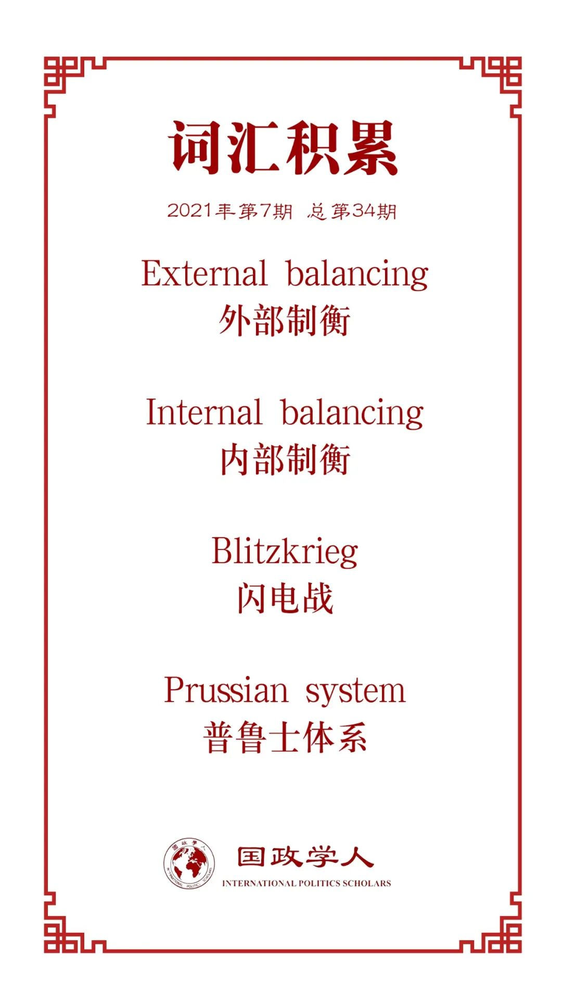

收录于合集 #理论研究 96个
作品简介
【作者】 Joseph M. Parent, 迈阿密大学政治学副教授, 重点研究国际关系理论、安全研究、大战略和外交政策。Sebastian Rosato, 圣母大学政治学副教授,也是KROC国际和平研究所、南欧维科欧洲研究所的研究员，重点研究国际关系理论。 【编译】 孟晓宇（国政学人编译员，山东大学东北亚学院硕士） 【校对】 石稚瑄 孙唯一 【审核】 朱文菡 【排版】 董诗 【美编】 臧泽华 【来源】 Parent, Joseph M., and Sebastian Rosato. “Balancing in neorealism.” International Security 40.2 (2015): 51-86. 【归档】 《国际关系前沿》2021年第7期，总第34期
期刊简介
**新现实主义中的制衡
** Balancing in Neorealism
Joseph M. Parent
Sebastian Rosato
内容提要
大国是否像新现实主义预测的那样保持制衡？许多批评家都给出了否定答案。例如保罗·施罗德得出结论说，新现实主义关于国际政治中制衡的主张经不起历史的审视，并建议国际历史学家不要采用新现实主义范式。然而作者却认为新现实主义对大国制衡行为提供了令人信服的解释。作者揭示了大量证据以支持新现实主义制衡理论，其发现自1816年以来，大国经常进行内部制衡，即通过武装和模仿其它国家的成功军事实践，以对抗其对手的能力，但其对外部制衡则缺乏信任。文章第一部分，设计了一种新现实主义的制衡理论；第二部分使用1816年以来大国武装、模仿和联盟行为的定量和定性证据来检验这一理论；第三部分总结了作者的论点和发现，并引出了对理论和政策的启示。
01
一种新现实主义的制衡理论
作者在这一部分提出了新现实主义中的一种制衡理论，其观点建立在以下假设的基础之上：1、大国是国际政治中最重要的参与者，它们是理性的和统一的，拥有军事能力，对于成本很敏感，并把安全放在首位。军事能力允许国家之间相互伤害，甚至有可能摧毁彼此的关系。2、国际体系是无政府主义的。3、地理距离和障碍使大国在远距离部署兵力时会遭受力量梯度的损失。就目前而言，最重要的分界线是陆地和海洋。
鉴于以上假设，作者提出：大国在自助的世界中寻求安全，可采取内部制衡与外部制衡这两种制衡政策。当国家增强其军事实力时，就会出现内部制衡；当大国结成联盟，威慑或防御共同的对手时，就形成了外部制衡。大国信任内部制衡，因为它最大限度地减少了对其他国家的依赖。相反，大国不信任外部制衡，因为它涉及到对其它国家的依赖。正如肯尼思·华尔兹指出的那样，“只有在(大国)战争的压力下”，才会出现真正的外部制衡。也就是说，外部制衡是国家在极端情况下的绝望行为。
内部制衡包括两种方式：其一是通过武装来实现这一点：增加军费、武器生产、军队水平或它们的某种组合。其二是模仿其它国家的成功军事做法，特别是它们的理论或技术创新。
地理位置对武装、模仿和联盟决策有影响。首先，陆地和海洋大国将采取不同水平的防御努力。海洋大国不需要像陆地大国那样投入大量资源来发展军事力量。其次，地理位置决定了各国如何分配资产。海洋大国对海基军事创新的反应更快，而陆地大国对陆基军事创新的反应更快。最后，陆地大国和海洋大国对联盟的态度不同，海洋大国比陆地大国更不可能达成联盟承诺。
02
武装、模仿和联盟行为
作者提出，大国更加倾向于选择内部制衡。在这一部分，作者用丰富的历史记录来证明了大国往往迅速武装和模仿它们的竞争者。
首先作者阐明了分析的历史时间范围——从1816年到1990年。因为1861年民族国家已经广泛诞生，而1990年苏联已解体，美国作为世界上唯一的大国，使得对传统制衡的分析暂时失去了意义。在这一历史时期内，作者将1816-1918年的奥匈帝国、1816-1945年的英国、1816-1940年的法国、1816-1945年的普鲁士(德国)、1816-1990年的俄国(苏联)、1861-1943年的意大利、1895-1945年的日本、1898至今的美国作为重点分析对象。根据地理因素对陆地力量和海上力量进行编码，奥匈帝国、法国、普鲁士(德国)、意大利和俄国(苏联)属于陆地大国；由于距离欧亚大陆相对较近，英国和日本在一定程度上是大陆型海洋大国；美国在二战前是一个完全的岛屿型海洋大国。然而，在西欧列强崩溃后，美国在紧邻苏联的地方部署了强大的力量，从而变成了一个完全的大陆型海洋大国。
1、内部制衡：武装
大国寻求创造军事优势或缩小与竞争对手的差距。但一国很少能长期保持军事优势，因为别国会努力进行内部制衡。在大多数情况下，有效的军事制衡将被优先采用，资源不如邻国的国家可能会在武装方面投入更多精力。
作者假定当一个大国比另一个大国拥有超过2：1的优势，且这一优势超过四年时为反常现象；反之则被视为符合作者理论假设的正常现象。从1816年到1990年，每年将每个陆地大国与每个竞争国配对，并对所有海洋大国进行同样的配对，产生了1651个军事比率。结果显示，进行了有效制衡的数据占据了84%。大多数反常现象都涉及边缘大国，也就是那些拥有资源的国家，它们处于大国和次要大国的边缘。如果我们排除1816年至1870年的普鲁士和1861年至1918年的意大利(当时它们是最弱的强国)，那么作者的假设成功率将增加到92%。
此外，由于大国在武装方面投入了不同的努力，为了衡量这种努力，作者收集了每个国家20-39岁男性人口中军事人员的百分比以及军费支出占国民生产总值(GDP)的百分比的数据。然后将这两个指标(每个类别中领先的国家得分为100)编制指数，并对指数进行平均。结果发现，无论是在陆地上还是在海上，有效的军事制衡在大多数情况下都是占优势的。实力较弱的国家比实力较强的邻国更努力，陆地大国比海洋大国付出更多努力；而海洋大国越接近陆地大国，它们就越努力地武装自己。
2、内部制衡：模仿
大国将模仿竞争对手的成功军事创新，并迅速采取行动。地理位置起着关键作用：近邻国家比偏远国家更有可能效仿；陆地大国更有可能复制陆基创新；而海洋大国更倾向于复制海基创新。作者分析了自1816年以来的六项军事创新：普鲁士体系、舰队作战、闪电战、航母战、战略轰炸和核武器。
对于每一项创新，作者假定一个示范点——一个日期，在这个日期，创新对国家军事能力的变革效应在国际体系中广为人知。如果其它大国模仿用了不到五年的时间，则作者的理论假设成功，反之则失败。判断模仿何时发生是很困难的，新的组织形式、技术以及战术的发展和部署通常是一个渐进的过程。创新往往结合了多种元素，而模仿国家很少会复制创新的每一个方面。作者的方法是确定有抱负的模仿者何时复制了关键要素——那些从根本上增强了发明者能力的特征。
（1）普鲁士体系：通过将后膛装弹步枪、铁路和电报与总参谋制相结合，普鲁士超越了其它国家，能够在战斗中部署一支庞大的、以补给为导向的、快速移动的、高度协调的军队。普鲁士体系的示范点是普法战争(1870-1871年)。法国人立即效仿普鲁士体系，对总参谋部进行了改革，在1872年成立了法国铁路管理委员会，并扩大了铁路网。到普法战争时，俄罗斯也吸收了普鲁士体系的一些元素，在1867年改用后膛装弹步枪，并在1868年建立了真正的总参谋部。
（2）舰队作战：舰队作战使海军能够大规模使用武力摧毁敌军并控制局势。其示范点是英国在和平时期1906年2月下水的第一艘无畏战舰。其它海洋强国迅速模仿英国的创新：美国在1906年开始建造无畏舰；日本在1907年紧随其后。即便是陆地强国的德国、俄罗斯、法国和意大利也在1910年开始效仿。
（3）闪电战：1940年中期法国陷落，德国闪电战显示出其革命性的影响。苏联在1942年开始实践闪电战，英国和美国于二战后期在欧洲大陆开辟战线后不久就赶上了模仿的步伐。
（4）航母战：航母战能够跨越远距离对敌国海军发动攻击性打击。航母战的示范点通常被认为是1942年6月的中途岛战役。到第二次世界大战结束时，所有的海上强国都在练习航母战。
（5）战略轰炸：战略轰炸通过降低对手的生产能力和军事能力，增加了它们在战争中获胜的可能性。战略轰炸的起始点是1944年，当时美国和英国使用空中力量摧毁了德国的工业和交通联系。苏联反应迅速，于1948年建立起了苏联空军，并作为一个独立的军种与陆军和海军平起平坐。
（6）核武器：核武器的绝对破坏力意味着，仅仅采用这种技术而不受任何组织变革的影响，就足以极大地增强一个国家的军事能力。1945年8月，美国在广岛投下原子弹，证明了核武器的影响。唯一的候选模仿者苏联紧随美国的步伐，苏联在氢弹的研制上只比美国落后十个月，两国在20世纪50年代中期并驾齐驱地发展弹道导弹。
综上所述，在作者考察的所有案例中，绝大部分候选模仿者在不到五年的时间里复制了创新的关键要素。
3、内部制衡：定性案例 作者通过进一步描述法国、德国和俄国从1871年到1945年的武装和模仿行为，来证明其制衡理论。
（1）武装：在普法战争惨败之后，法国敏锐地意识到了德国的优越性，并决心克服它。法国左翼和右翼就义务兵役的重要性达成了一致，随之而来的是一系列改革。虽然俄国和德国在三皇同盟中是统一的，但1870年以后，俄国专注于自助。1874年采用了普遍征兵制度，以对抗德国优越的军事能力。德国也没有固步自封，它扩大了军队，改进了战争机制。到19世纪80年代中期，德国高级军队规划者们对俄国的进步感到震惊。之后，欧洲开展了国际军备竞赛，没有人能解除武装。任何大国都不能在军备上落后于其他国家，即使是停止竞争也等同于部分裁军。
（2）模仿：在所讨论的时期中有两项陆上创新：普鲁士体系和闪电战。在这两种创新下，德国的优势都是暂时的，因为法国和俄国很快就全力以赴地模仿了德国。法国几乎完全遵循普鲁士体系。正如战争部长弗朗索瓦·杜·巴拉尔将军在1873年承认的那样：“我们模仿的比我们创造的要多。”普法战争后，俄国总参谋部呼吁采取大胆的新措施来应对德国的优势。俄国军队从基本上静止到更具机动性和灵活性，增加了更多的骑兵，更多的铁路线，并建立了要塞步兵，从而解放了正规步兵。虽然俄国在效仿普鲁士体系的铁路元素的过程中面临着物质上的硬性限制，但从1891年到1903年俄国政府在铁路等基础设施项目上的国家支出比例翻了两番。第二次世界大战期间，苏联迅速效仿德国的闪电战方法，并在不迟于1942年11月的进攻中，结合了闪电战的核心要素收复了德国的战果。
4、外部制衡：联盟 新现实主义认为，国家几乎不看重外部制衡，因为这需要依赖其它国家。因此大国很少涉足外部制衡。
（1）稀有性：按照惯例，如果两个或两个以上的大国签署了一项联盟条约，而该条约的条款承诺它们将共同防御竞争对手或大国联盟，那么它们就是外部制衡。若以此为判断联盟的条件，再根据联盟条约义务和条款(ATOP)数据集，作者发现：从1816年到2003年，有309个涉及大国的联盟。然而，只有73个是大国之间的协议，其中只有43个是针对竞争对手的，这43个中有29个是没有让签字国承诺相互防御的。因此，73个大国联盟中只有14个有共同的外部制衡需求。5个外部制衡案例发生在战时，这一现象支持了前文的观点，即大国在极端情况下诉诸于区域联盟。
（2）风险性：为了确定大国是否认为外部制衡是危险的，作者严格选择了四个案例来进行分析：德国和奥匈帝国，英国和法国，第一次世界大战前的法国和俄国；二战前的德国和意大利。这些案例都展现了结盟的极大不确定性，盟友间相互存在怀疑与疑虑。
（3）反应迟缓：有大量证据表明大国对别国的反抗性努力是反应迟缓的。例如，三国联盟（德意奥）与法俄联盟一直针锋相对，即使在这种情况下，法国也等了近十年才在1891年与俄罗斯签署了一份协议，直到1894年才巩固联盟，直到1901才批准关于欧洲力量制衡的军事议定书。三国联盟在对抗法俄联盟方面几乎没有起到什么作用，战争爆发时也缺乏协调的计划。
03
结论
自助是新现实主义的核心。因此，大国将它们的信任寄托在内部制衡上，以应对军事能力制衡的不利变化。权力和地理位置意味着不同的国家付出不同的努力，模仿不同的创新。外部制衡则不同，盟国可以保证它们将提供打击威胁的能力，但国家不能确定它们的伙伴会履行其承诺。因此，不仅大国很少进行外部制衡，而且它们也怀疑自己的和对手的联盟的合理性。
历史记录支持以上观点，自1816年以来，大国经常武装和模仿，以回应竞争者实力的增强。每个大国都仔细监控其竞争对手，并相应地调整自己的努力。在战争的大熔炉里，所有国家都模仿得特别快。相比之下，大国很少进行外部制衡。在战时，它们别无选择只能结成联盟，但在和平时期并非如此。即使联盟已经形成，大国也怀疑它们的伙伴和对手的伙伴的可靠性。在理论上和实际上，大国都认为内部制衡是可靠的，而外部制衡是有风险的。无论一个人的理论倾向是什么，新现实主义的制衡理论都是一种具有广泛实用性的工具。
译者评述
本文是对国际关系主流理论的延伸与创新。新现实主义提出，由于国际社会处于无政府状态，各国需要自助，因此国际结构塑造着国家行为，而寻求制衡与均势则是国家维护自身安全的重要手段。然而均势与制衡理论遭到了诸多学者的驳斥，有人认为国家根本不会按照新现实主义所假定的规律来进行制衡。但作者则认为新现实主义中蕴含着一种制衡理论，并通过大量的实践案例来证明其制衡理论。简而言之，作者认为在新现实主义的基本假设前提下，国家倾向于寻求内部制衡，即增加武装资源投入并模仿它国的军事创新。大国不信任军事联盟，因此外部制衡总是稀少的、充满风险的以及反应迟钝的。
新现实主义的资深学者们，如肯尼思·华尔兹和约翰·米尔斯海默等虽提出了均势与制衡理论，但很少对外部制衡和内部制衡的选择与运用进行区分，而且大多数学者重点关注外部制衡。因此，作者从区分内部与外部制衡来对制衡理论进行细化确实是一种理论创新，也对外界的驳斥进行了有力的回击。不仅如此，作者综合运用定性与定量的研究方法。首先，将国家内部制衡的案例进行量化，用数据有力地证明了自身的观点；其次，作者引用了大量的历史案例来证明外部制衡，即同盟的弊端。本文是对均势以及制衡理论的发展，但这一理论仍有诸多问题值得我们去探索。例如，各国内部制衡努力的上限为何？同盟理论在国际政治理论中依旧占据着重要地位，且美国对外部制衡——同盟的运用即使在和平年代也依然发挥了重要的作用，又该作何解释？
词汇整理
 文章观点不代表本平台观点，本平台评译分享的文章均出于专业学习之用, 不以任何盈利为目的，内容主要呈现对原文的介绍，原文内容请通过各高校购买的数据库自行下载。
好好学习，天天“在看”
国政学人
支持学术公益与知识传播
微信扫一扫赞赏作者 __赞赏
已喜欢，对作者说句悄悄话
取消 __
发送给作者
发送
最多40字，当前共字
上一页 1/3 下一页
长按二维码向我转账
支持学术公益与知识传播
受苹果公司新规定影响，微信 iOS 版的赞赏功能被关闭，可通过二维码转账支持公众号。